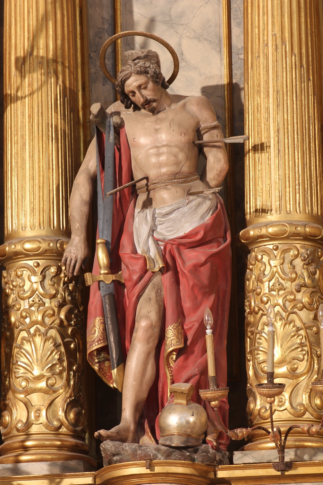

Sant Sebastià (s. III) va ser un oficial de l’exèrcit romà que es convertí al cristianisme i predicà la nova fe entre els seus companys, aconseguint nombroses conversions. Quan l’emperador Dioclecià descobrí les seves activitats, ordenà la seva captura i intentà que es retractàs de la seva fe. Sant Sebastià es mantengué inflexible i Dioclecià ordenà la seva execució. Va ser fermat a un tronc i sagetat. Donat per mort, quan l’anaven a enterrar descobriren que encara era viu. Tan aviat com es recuperà de les ferides, anà a enfrontar-se novament a l’emperador, que tornà a ordenar capturar-lo i executar-lo, aquesta vegada a bastonades.
En aquesta escultura del s. XVIII se’l representa nu, fermat a un tronc i amb sagetes clavades al cos, en record del seu primer martiri. Del tronc penja una espasa i en terra hi ha un casc que fan referència a la seva condició de soldat romà.